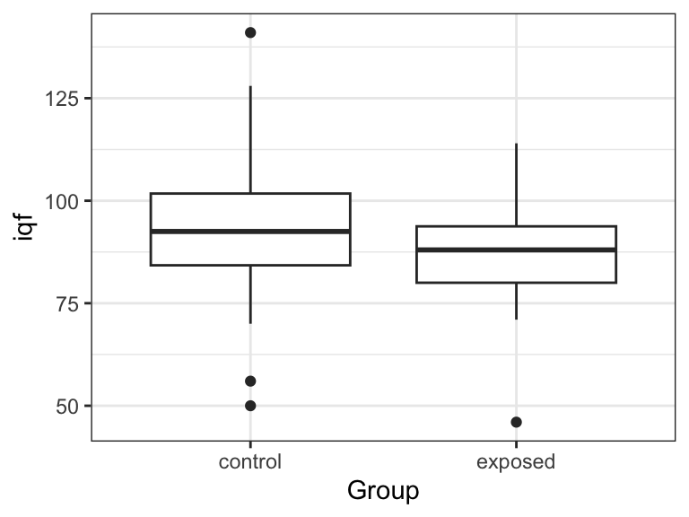

library(tidyverse)
library(broom)Two-sample t-Methods
Paired \(t\)-tests
Data from 10 women containt eh systolic blood pressure (SBP) (in mm Hg) before and while using an oral contraceptive.
oc_df <- data.frame( pre_sbp = c(115, 112, 107, 119, 115, 138, 126, 105, 104, 115), post_sbp = c(128, 115, 106, 128, 122, 145, 132, 109, 102, 117) )We use
t.test()to run a paired \(t\)-test.x: The first column.y: The second column.paired: set toTRUEto make it a paired \(t\)-test.
t.test(x = oc_df$post_sbp, y = oc_df$pre_sbp, paired = TRUE) |> tidy()# A tibble: 1 × 8 estimate statistic p.value parameter conf.low conf.high method alternative <dbl> <dbl> <dbl> <dbl> <dbl> <dbl> <chr> <chr> 1 4.8 3.32 0.00887 9 1.53 8.07 Paired t-… two.sidedThis is the exact same as just first calculating the differences then running a one-sample \(t\)-test.
oc_df <- mutate(oc_df, diff = post_sbp - pre_sbp) t.test(diff ~ 1, data = oc_df) |> tidy()# A tibble: 1 × 8 estimate statistic p.value parameter conf.low conf.high method alternative <dbl> <dbl> <dbl> <dbl> <dbl> <dbl> <chr> <chr> 1 4.8 3.32 0.00887 9 1.53 8.07 One Sampl… two.sidedNotice that the paired \(t\)-test uses
x - y, noty - x, as the vector of differences.Our conclusion might read like this:
We have strong evidence that women who use an oral contraceptive (OC) have a different mean systolic blood pressure (SBP) than women who do not use an OC (\(p\) = 0.008874, \(n\) = 10). We estimate that women who use an OC have on average an SBP 4.8 mm Hg higher than women who do not use an OC (95% CI 1.534 mm Hg to 8.066 mm Hg higher).
Exercise: A study included 15 twins where one has schizophrenia and the other does not. These data contain the volume (in cm\(^3\)) of the left hippocampus of each twin. These data are from The Statistical Sleuth, which in turn obtained the data from doi:10.1056/NEJM199003223221201. Evaluate if there are any physical differences between the twins. Also, provide an interval estimate on the mean difference in volume between twin-types. Do this in two ways (i) by using
t.test()and (ii) “by hand” after calculating the appropriate summary statistics.sc_df <- data.frame( Unaffected = c(1.94, 1.44, 1.56, 1.58, 2.06, 1.66, 1.75, 1.77, 1.78, 1.92, 1.25, 1.93, 2.04, 1.62, 2.08), Affected = c(1.27, 1.63, 1.47, 1.39, 1.93, 1.26, 1.71, 1.67, 1.28, 1.85, 1.02, 1.34, 2.02, 1.59, 1.97) )
Unpaired (Equal Variance)
Consider the lead data that you can read about here.
lead <- read_csv("https://dcgerard.github.io/stat_320/data/lead.csv") lead <- filter(lead, !is.na(iqf))We are interested in if the exposed and control groups have the same mean full scale IQ. Let’s explore the data
ggplot(lead, aes(x = Group, y = iqf)) + geom_boxplot()
Let \(X_i\) be the \(i\)th IQ score in the control group, let \(Y_i\) be the \(i\)th IQ score in the exposed group.
Then we assume that \(X_i \sim \mathrm{N}(\mu_1, \sigma^2)\) and \(Y_i \sim \mathrm{N}(\mu_2, \sigma^2)\), and that all observations are independent.
We use
t.test()to run a two-sample \(t\)-test.- The quantitative variable is to the left of the tilde
~ - The variable encoding the two groups is to the right of the tilde
- If we assume equal variances in each group, we set
var.equal = TRUE
t.test(iqf ~ Group, data = lead, var.equal = TRUE) |> tidy()# A tibble: 1 × 10 estimate estimate1 estimate2 statistic p.value parameter conf.low conf.high <dbl> <dbl> <dbl> <dbl> <dbl> <dbl> <dbl> <dbl> 1 4.53 92.6 88.0 1.67 0.0977 118 -0.845 9.91 # ℹ 2 more variables: method <chr>, alternative <chr>- The quantitative variable is to the left of the tilde
We can verify this result manually (you would never do this in real life, but you might on an exam).
## Get summary statistics of the two groups lead |> group_by(Group) |> summarize(mean = mean(iqf), var = var(iqf), n = n()) -> sumdf xbar <- sumdf$mean[[1]] ybar <- sumdf$mean[[2]] s2x <- sumdf$var[[1]] s2y <- sumdf$var[[2]] n1 <- sumdf$n[[1]] n2 <- sumdf$n[[2]] ## Calculate pooled sample standard deviation s <- sqrt(((n1 - 1) * s2x + (n2 - 1) * s2y) / (n1 + n2 - 2)) ## Calculate t-statistic tstat <- (xbar - ybar) / (s * sqrt(1 / n1 + 1 / n2)) ## compare to t distribution with n1 + n2 - 2 df pval <- 2 * pt(-abs(tstat), df = n1 + n2 - 2) ## Get confidence intervals lower <- (xbar - ybar) - qt(0.975, df = n1 + n2 - 2) * s * sqrt(1 / n1 + 1 / n2) upper <- (xbar - ybar) + qt(0.975, df = n1 + n2 - 2) * s * sqrt(1 / n1 + 1 / n2) c(pval = pval, lower = lower, upper = upper)pval lower upper 0.09772 -0.84454 9.90917Exercise: Is there any difference between exposed and control groups when it comes to the finger-wrist tapping test in dominant hand (
maxfwt)? Assume equal variances.
- Exercise: A sample of eight 35- to 39-year-old non-pregnant, premenoposaul OC users have a mean systoolic blood pressure (SBP) of 132.82 mm Hg and a sample standard deviation of 15.34 mm Hg. A different sample of 21 non-pregnant, premenopausal, non-OC users have a mean SBP of 127.44 mm Hg and a sample standard deviation of 18.23 mm Hg. What can be said about the underlying mean difference in blood pressure between the two groups? Provide a measure of how sure we are that there is a difference, and provide some interval estimate for this difference. Assume equal variances.